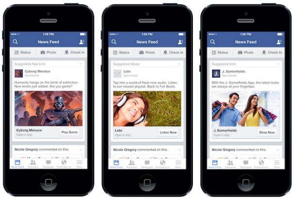

Includes
Usability Evaluation & Design Recommendations
Introduction
Facebook is a social media platform that allows its users to create and share content. It has over 823 million active mobile users and advertisements are key to its business. My team conducted a usability evaluation to understand:
- How participants experience advertisements in their news feeds
- Their ability to modify their preferences
- Observe any difficulty getting to their preferences
Research Questions

- Can users easily navigate to the ads preferences settings from an ad on their news feed?
- What is their reaction to changing ad preferences?
- Do users feel more in control after they've adjusted their ad preferences?
- Do they feel like they've made an impact on the ads served to them?
Recommendations
It's too hard to change ad preferences on Facebook:
- Fewer steps to navigate to ad preferences
- Subscription Control to "Why am I seeing this?" and the ability to unsubscribe to certain ads after 1 screen
- Add Search Control to Categories so users can search for categories that interest them
- Biannual check up so users can update their ad preferences frequently